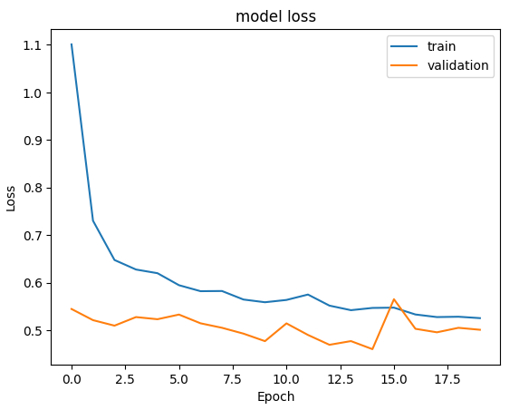
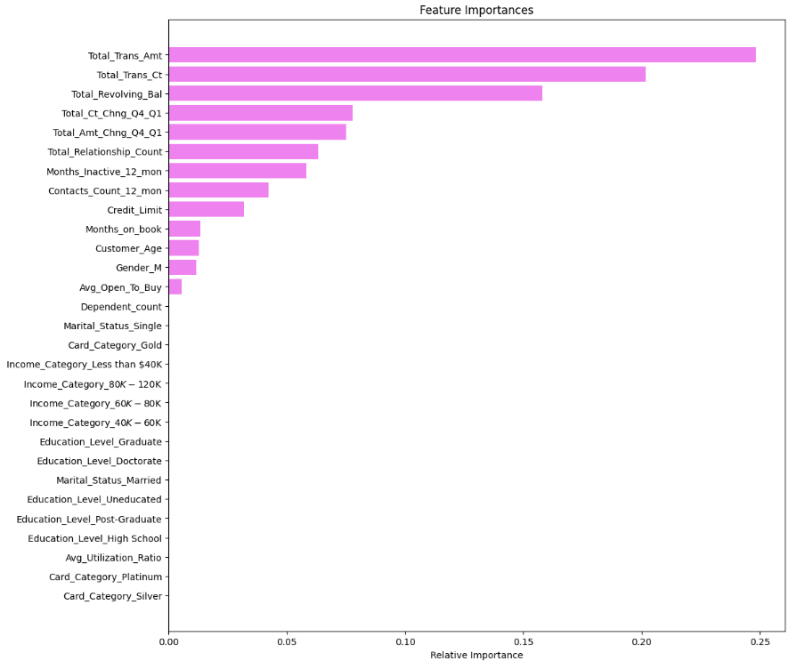
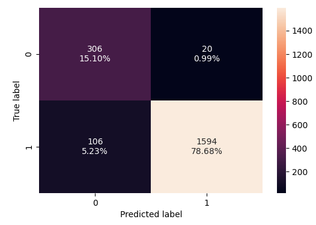
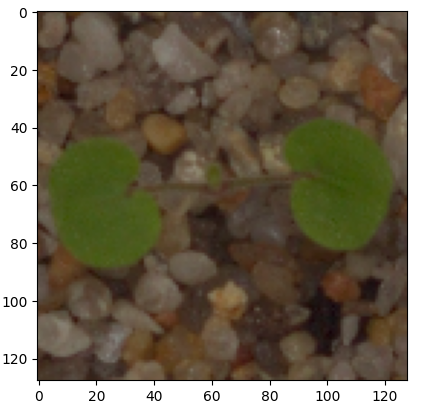
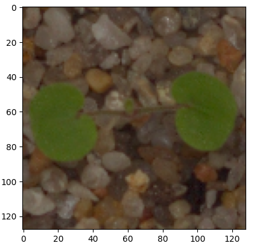

Bank Churn Prediction
Predicted bank churn using ANNs. Achieved 78% recall score to minimize false negatives, resulting in only 5.75% false negatives on the test data.

Tags: ANN, Recall Optimization, Banking Analytics, Python, Data Visualization
Credit Card User Churn Prediction
Predicted CC users churn by using multiple classifiers and tuning the best performing. Determined most important factors contributing to CC users churn. Recall was maximized to minimize the number of CC users that would churn, resulting in 0.99% false negatives.
 Tags: Classifier Tuning, Feature Importance, Recall Maximization, Financial Analytics, Python
Seedling Classification using CNNs
Classified images of seedling using CNNs.
 

Tags: CNN, Image Classification, Agricultural Analytics, Python, Deep Learning